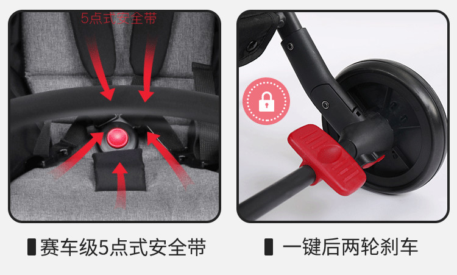
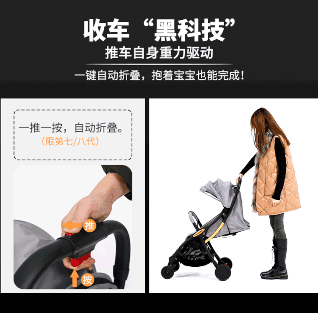
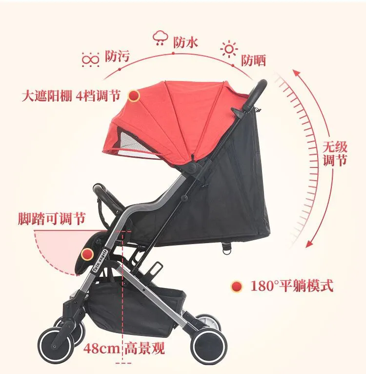
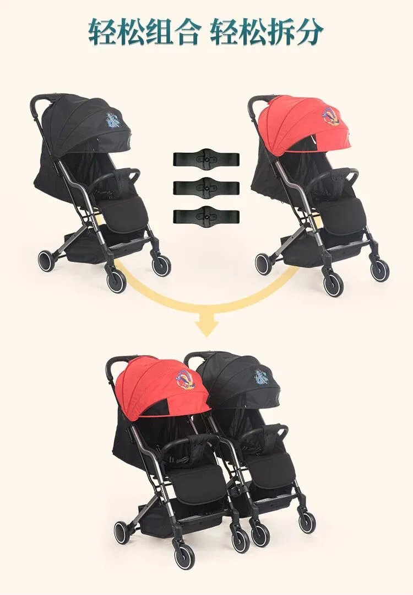
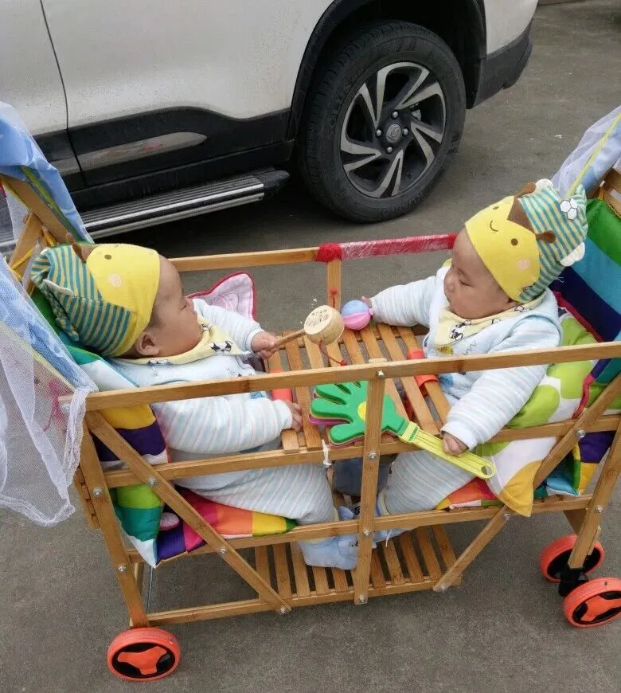

孖仔帮
公众号ID：twinsbang
关注
文|圆圈妈
网图|侵删
【帮主】圆圈妈：官宣下第三期的双胞胎跳蚤市场开放啦！公号输入“赶集3”，扫码进入即可，仅限200人，仅开放3天。
马上要开始双十一的狂欢了，社群又开始互相抄作业，抄得最多的依然是婴儿车，这个世纪难题，让人没想起就揪心窝，一想起就脑壳疼。
我从2018年开始写双胞胎婴儿车的攻略，在每年的电商大促来临之际都会啰嗦一番，免得大家不小心又错过了一个亿！
攻略写了N多，但依然有选择综合征的人私信问，亲，给我个痛快，到底买哪个款？为此咱们号特意联系了商家做了2次双胞胎婴儿车的团购，反响不错，总算解决了部分人的需求。
但每个家庭和宝宝的需求不一样，社群依然有人在求助：苍天呐，到底双胞胎的婴儿车怎么选，从孕中期选到孕后期，看得眼花缭乱，打开某宝某东就倒胃口，整个人都凌乱到麻花状了。
好吧，今天这篇会综合多数人纠结的痛点，给到5个选购要诀，希望能对大家的选择提供有益的借鉴。
一，安全性
带双胞胎出行很容易手忙脚乱，特别是小月龄时，隔三差五就要喂奶换尿布，经常忘这忘那。
此时，你需要一辆带联动刹车装置的婴儿车，最大限度地保障两宝宝的安全，免得你忙晕过头，车子和两孩子都溜走了！
建议一脚双刹的刹车装置，刹车装置直接与后轮轴承连接，这是最安全的机械刹车装置。
另，五点式安全带设计，并有安全前扶手也是关键，特别是6个月后的双胞胎坐不安分，躺着不顺，总是想着要越狱，特别让人不省心。
当你被俩娃搅得心力交瘁时，用五点式安全带绑好吧，带着出去溜达下，可以给你换来短暂的片刻宁静。
温馨提示，到了俩娃的口欲期，安全前扶手会被他们又亲又啃，注意保持清洁哦，我们的通常做法是在家使用时与餐盘一起卸掉，外出时才装上。
二，照顾者的使用便利性
1，轻便为主
若婴儿车主要让长辈或宝妈使用，宜轻便为主，可以很紧凑地折叠起来，通常重量在6公斤左右，那些高景观又拉风的推车，还是想想就算了吧。
我们家主要是公婆带娃，当时也是很纠结不知道选哪种，后面问了婆婆意见，完全照着她的要求去买：价钱不贵，甭管品牌，车轱辘能走，能躺能坐，
事实证明，这真是个明智的选择，婆婆感觉到被重视，买的推车也是她想要的那种，每天都美美哒带着圆圈去小区溜达，皆大欢喜。
2，单手收车功能
双胞胎与单胎不一样，经常人手不足，一人推车，一手抱娃是常态，遇到路障需要收车但没有帮手时，巴不得推车就像变形金刚一样秒变身。
然而这不是幻想，只要推车附有单手收车功能，即可实现。
我们号之前开团的第八代推车就有这个功能。我想，这推车能开团2次均售罄，主要亮点在于收车很方便，让人觉得特别贴心特别香，不用弯腰弓背下蹲，一拉一按就秒收，简直是如虎添翼啊！超赞！
3，使用顺畅
我们带着双胞胎出行大概率会状况频发，比如路况不佳，俩娃哭闹...此时，若还摊上一辆不好使的婴儿车，那就更遭罪了。
强烈建议，应当把转向灵活好使，减震耐磨的车轮列入重点考虑范围。
最好是前轮360旋转设计，转向灵活无卡点，朝前往后，往左往右，转弯后腿都能操作自如。唯有方便推车之人操作顺当，两宝宝才能坐得舒服，躺着自在。
三，双胞胎宝宝的舒适度
我们不是小婴儿，不知道两宝宝坐在婴儿车上的感受，但经过我多年的暗中观察和经历过的那些鸡飞狗跳，应该有以下3点：
1，座椅双向调整
座椅换向功能对于双胞胎宝宝是非常有用，两个宝宝不管作息是否同步，需求是否一致，座椅双向调整更能灵活满足到两宝宝的需求。
天气好风景美的时候，让两宝宝面朝前外自己观赏大自然；宝宝想睡觉或闹情绪时，让宝宝面朝里与妈妈面对面，彼此都会安心很多。
2，避震效果佳
车架的造型，轮子的材质和大小，是否有弹簧减震，这些因素都直接影响着婴儿车的避震效果，避免在凹凸不平的路上使用时，让宝宝感到不舒服。
若你特别喜欢带着双胞胎四处溜达，长距离走路窜门，逛公园那种，尤其要考虑下车体的减震系统和避震设计，特别是车轮子，尽可能选EVA减震车轮，可适合多种路况使用。
3，内饰配套等细节
有一个真相只说一遍：你费尽心思买回来的婴儿车，有可能双胞胎一点都不care哦，或者有一个喜欢坐，另一个只要大人抱，最后的结局就是，车闲置了，大人受累一人抱两个。
鉴于此，车子的内饰配套不能忽略。
柔软舒适的坐垫椅垫，材质环保无异味，面料柔和，色彩鲜艳，图案丰富；
可调式五点安全带的安全带；
舒适头枕及深度侧翼；
可调节角度和高度的扶手和脚踏板；
透气防晒的遮阳篷；
顶部还要有观察窗和透气窗，方便宝宝无聊的时候与妈妈互动下。
预算充足的话，可配个睡篮，睡篮的使用率可能不高，但在小月龄时用处特别大：在家可以当婴儿床，外出打预防针可以拎着，犹如移动中的婴儿床，给两宝宝舒适的睡眠；有的款式还支持车载，可以当安全座椅，随时可以带上俩娃，说走就走…
四，考虑手推车的大小尺寸
喜欢带着双胞胎去外面追逐诗和远方，意味着经常要将手推车收进轿车内，这必须考虑大小是否放得进去。
此时你若还在纠结买并排还是双排，那就真的“想！得！美！”
事实上，一体式双胞胎婴儿车折叠后通常都无比巨大，紧凑型的小轿车后车厢几乎装不下。
那么，最佳选择就是买两个单独的车子，配上连接器，想分就分，想合就合，随时随地，灵活方便。
五，双胞胎的年龄
妈妈们都希望买个质量杠杠的婴儿车可以使用到3岁，一步到位，事实上，这可能性不大！
目前为止我最大的感慨就是，双胞胎从出生到入园，对车的需求仅次于奶粉尿不湿，包括但不限于手推车，伞车，遛娃车，童车……
随着双胞胎年龄的增长，手推车也要随之更新换代，以便适应两宝宝日渐变化的需求。
1岁前，婴儿车靠背要多角度调节，因1岁内的宝宝多处于平躺的卧姿姿势，选择能平躺的手推车可保护宝宝脊椎的发育。
1岁后，轻便折叠易携带是首选，躺卧模式次之，此时要换轻便为主的伞车。
2岁后，需要遛娃车或童车，这个更烧脑，程度可轻可重，全看俩娃的心情，
比如你买了前后排的童车，他们会争谁在前面，谁在后面。好嘛，都想坐前面，那就买个并排座位的，但他们还是会争谁在左边，谁在右边，而且并排座位的童车推出去拉风是事实，被路人鄙视，被电梯拒载也是事实。
别晕菜，还没完...
买婴儿车还要看季节，比如夏季要买竹推车，图凉快，图方便…
这里的“方便”信息量很大，以我们家为例子。
天气炎热时，把尿不湿摘了，俩娃想嘘嘘了，就地解决，反正镂空的，完了再用湿巾擦拭下即可，想当年圆圈两兄弟就是这样被婆婆带着度过了一个没有尿不湿自由自在一泻千里的夏天。
我时常怀疑，圆圈哥俩与他们的坐骑经常溜达的那一片草地长得特别茂盛，也许真的是双倍童子尿的功劳。
结合过来人的经历列举了这么多例子，只想意味深长地总结一下：亲们，家有两只四角吞金兽，希望买个推车一步到位，想想就行了，做好随时买买买，车车车的心理准备吧！
以上选购要诀啰嗦到这里，如果依然还没有眉目，那就来我们双胞胎社群抄作业吧，众人拾柴火焰高，总有一款分享推荐合适你。
也可以看看我们今日返团的双胞胎推车和首次开团的两款新车，感兴趣的集美们可扫码进入团购群咨询。
-END-
今日互动话题
#给我抄下作业吧#
你家买的是哪款婴儿车，求推荐
评论区聊一聊呗！
微信公众号：孖仔帮
ID : twinsbang
专注双胞胎孕育，养育，教育经验分享
扫码关注我们
点一下你会更好看耶





